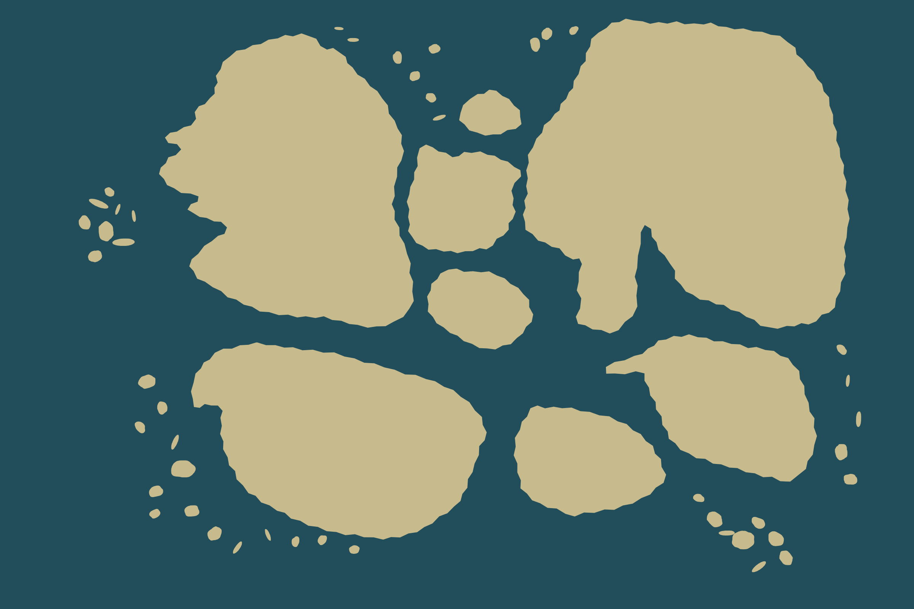
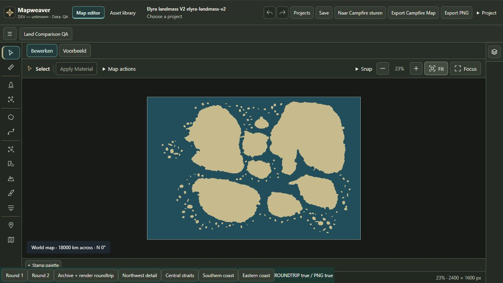

Native bewerkbare land-/zeebasis, geen stamps of decoratie. Technische proef geslaagd; premium referentiekwaliteit niet gecertificeerd.
Bewerkbare kaart · Native PNG · Werkwijze · Kwaliteitsbeoordeling · Toolgebruik · Referentie / V1 / V2



NW-detail · Centrale zeestraten · Zuid · Oost